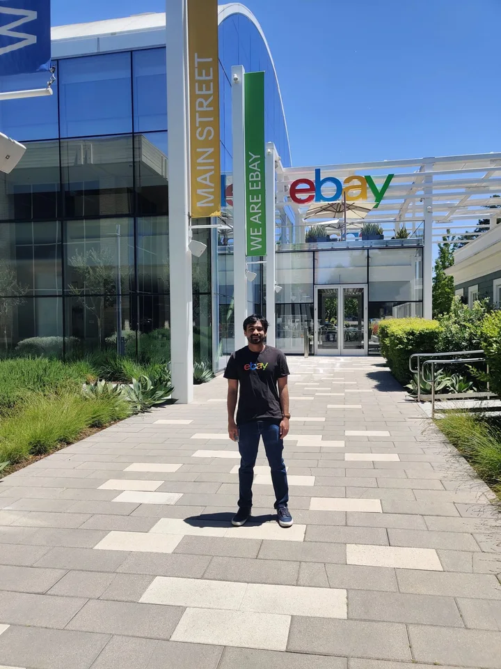
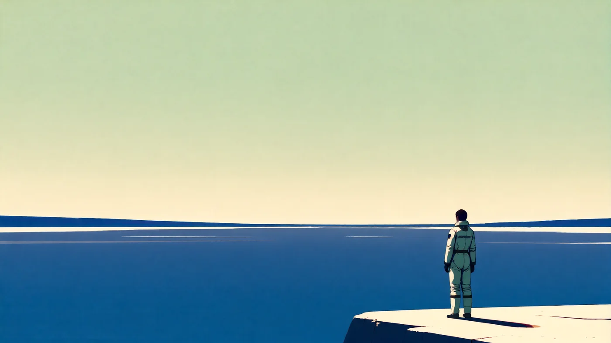
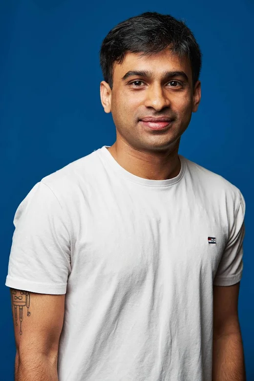
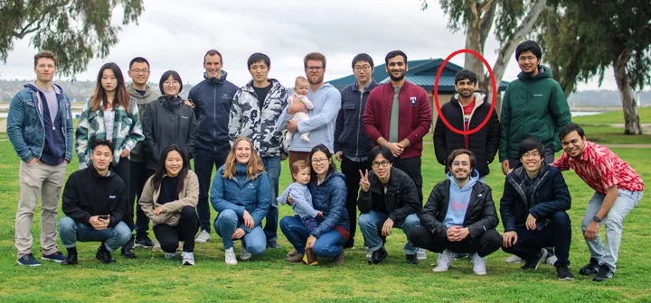
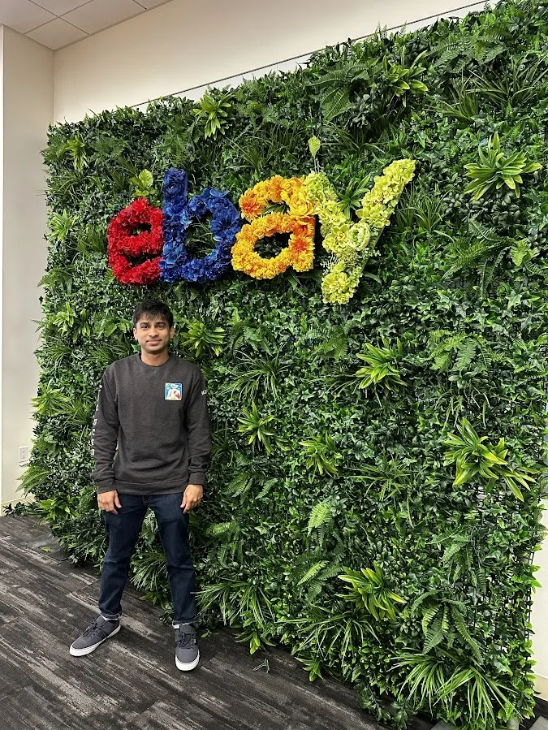
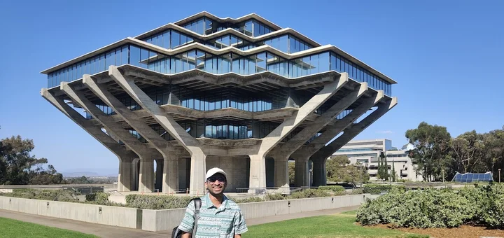

2024.04 San Jose, CA
Applied Researcher, eBay
Knowledge Extraction team — production LLM systems for information extraction at scale. Promoted October 2025.


I'm San — I build AI systems by day and this world in the evenings.

Pick hard things you want to understand, and build until they're real. I started in electrical engineering, found machine learning through Kaggle, and designed ASICs at Texas Instruments — which left me with a permanent respect for silicon.
After DALL·E 3, the singularity looked underway, so I switched lanes: a CS master's at UCSD, then research at eBay, where I build production LLM extraction systems. In December 2025, my brother Chin and I won the NeurIPS Embodied Agent Interface challenge — the work behind Winning by Overfitting.
This site is where I follow the argument of GPT-7 Will Have Arms wherever it leads: essays, films, and experiments about frontier technology becoming physically real.
Currently
GenAI research @ eBay
Based in
SF Bay Area
Latest win
NeurIPS '25 EAI Challenge
The whole path, kept honest: wins marked, failures included, photographs filed as evidence.
First globally in the Embodied Agent Interface challenge — LLM-driven embodied agents for goal interpretation, subgoal decomposition, and action sequencing. With Chin, as Team AxisTilted2.
Knowledge Extraction team — production LLM systems for information extraction at scale. Promoted October 2025.

Worked with Prof. Julian McAuley's group on AI music and LLMs. TA'd the graduate recommender-systems course.

Early agentic system (before agents were mainstream) turning research papers into visual zines with Claude 2. People's Choice, Student Innovation Contest.

A writing assistant for novelists. My first shot at entrepreneurship; the product failed, the lessons stuck.
First exposure to industry research — information extraction at scale on the Knowledge Extraction team.

Named-entity extraction from product titles — DeBERTa V3 with K-fold ensembling. The win led to the internship.
The deliberate turn from hardware engineering to machine learning research.

Digital design through the COVID era. Physical design, RTL, and a newfound respect for what silicon actually costs.
Found deep learning through Kaggle — Silver and Bronze medals. Thesis on LSTM power-quality classification won an IEEE best-paper award. Spent the clear nights with the astronomy club.

The technical report behind the EAI Challenge win. With Chin Pradeep.
LLM + text-to-image pipeline for visual research communication.
Undergraduate thesis work.